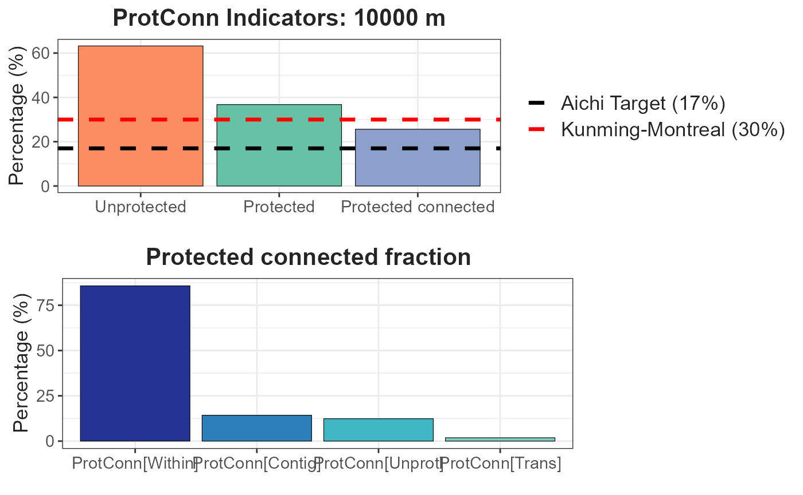
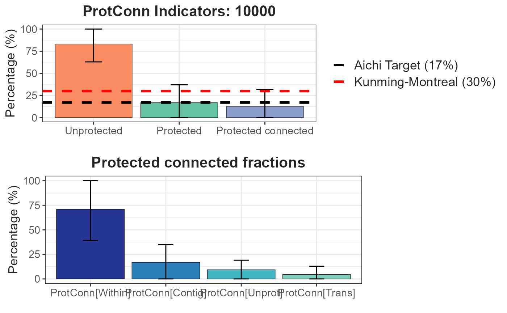
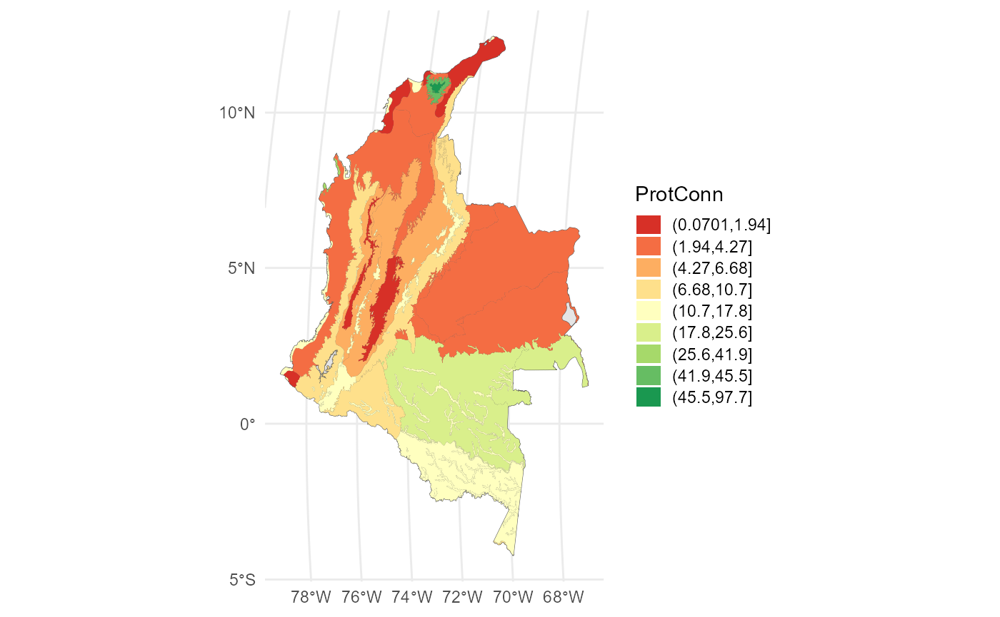

Example 2: Connectivity of protected areas in Colombia
In this example, we assess the connectivity of Colombia’s protected
areas network in 33 ecoregions of great importance to the country using
the Protected Connected Indicator (ProtConn). Particularly, we have
1,530 polygons of protected areas. The spatial information utilized in
this example is derived from the connectivity assessment study of
protected areas in the Andean Amazon region, as conducted by Castillo et
al., (2020). In order to estimate the ProtConn index, we employ the
MK_ProtConn() and MK_ProtConn_mult()
functions. In this example, we will utilize an organism median dispersal
distance threshold of 10 km, a connection probability pij = 0.5, and a
transboundary PA search radius of 50 km (for further details, please
refer to Castillo et al., 2020; Saura et al., 2017). We used Euclidean
distances, particularly the distances between edges to establish the
connections between nodes (PAs).
Loading inputs
#Protected areas
load(system.file("extdata", "Protected_areas.rda",
package = "Makurhini", mustWork = TRUE))
nrow(Protected_areas)## [1] 1530## [1] 33
#For practicality we will use the first three columns.
Ecoregions <- Ecoregions[,1:3]Plot:
mask_ecoregions <- ms_dissolve(Ecoregions)
PAs_national <- ms_clip(Protected_areas, mask_ecoregions)
PAs_transnational <- ms_erase(Protected_areas, mask_ecoregions)
PAs_transnational$Type <- "PAs in neighboring countries"
PAs_subnational <- PAs_national[PAs_national$ESCALA_2 == "Subnacional",]
PAs_subnational$Type <- "Subnational PAs"
PAs_national <- PAs_national[PAs_national$ESCALA_2 == "Nacional",]
PAs_national$Type <- "National PAs"
PAs <- rbind(PAs_national, PAs_subnational, PAs_transnational)
PAs$Type <- factor(PAs$Type, levels = c("National PAs", "Subnational PAs", "PAs in neighboring countries"))
ggplot() +
geom_sf(data = Ecoregions, aes(fill = "Ecoregions"), color = "black") +
geom_sf(data = PAs, aes(fill=Type), color = NA) +
scale_fill_manual(name = "Type", values = c("#1DAB80", "#FF00C5", "#E06936", "#8D8BBE"))+
theme_minimal() 
MK_ProtConn()
This function calculates the Protected Connected indicator (ProtConn) for a region, its fractions and the importance (contribution) of each protected area to maintain connectivity in the region under one or more distance thresholds. In this example, we use the edge Euclidean distance, a more accurate Euclidean method, but it is also more demanding in terms of RAM consumption and processing time, as it considers all the vertices of the polygons in its estimation. One way to speed up the process of estimating the distances between nodes is to use the “keep” option of the “distance” parameter, which is used to simplify the polygons by reducing the number of vertices. The value can range from 0 to 1 and represents the proportion of points to be retained. A higher value results in increased speed but decreased precision
#Select first ecoregion
Ecoregion_1 <- Ecoregions[1,]
#keep = 0.6 simplify the geometry and reduce the number of vertices
ProtConn_1 <- MK_ProtConn(nodes = Protected_areas, region = Ecoregion_1,
area_unit = "ha",
distance = list(type= "edge", keep = 0.6),
distance_thresholds = 10000, probability = 0.5,
transboundary = 50000, plot = TRUE, intern = FALSE)A dynamic table is generated, displaying the ProtConn values and their fractions. Additionally, a graph is produced, illustrating the ProtConn values and comparing them with the percentage of protected and connected area recommended for a region in the Aichi and Kumming-Montreal targets.
class(ProtConn_1)## [1] "list"
names(ProtConn_1)## [1] "Protected Connected (Viewer Panel)" "ProtConn Plot"
ProtConn_1$`Protected Connected (Viewer Panel)`| Index | Value | ProtConn indicator | Percentage |
|---|---|---|---|
| EC(PC) | 4407499.00 | Prot | 36.7627 |
| PC | 6.5700e-02 | Unprotected | 63.2373 |
| Maximum landscape attribute | 17196418.45 | ProtConn | 25.6303 |
| Protected surface | 6321863.10 | ProtUnconn | 11.1323 |
| RelConn | 69.7184 | ||
| ProtConn_Prot | 85.7928 | ||
| ProtConn_Trans | 1.8427 | ||
| ProtConn_Unprot | 12.3645 | ||
| ProtConn_Within | 85.7235 | ||
| ProtConn_Contig | 14.2765 | ||
| ProtConn_Within_land | 21.9712 | ||
| ProtConn_Contig_land | 3.6591 | ||
| ProtConn_Unprot_land | 3.1691 | ||
| ProtConn_Trans_land | 0.4723 |
ProtConn_1$`ProtConn Plot`
We can obtain the ProtConn value for each ecoregion using a loop such
as lapply, for, map, etc. In this example we will use the
lapply function.
ProtConn_1 <- lapply(1:nrow(Ecoregions), function(x){
x.1 <- MK_ProtConn(nodes = Protected_areas,
region = Ecoregions[x,],
area_unit = "ha",
distance = list(type= "edge"),
distance_thresholds = 10000,
probability = 0.5, transboundary = 50000,
LA = NULL, plot = TRUE, intern = FALSE)
return(x.1) })
class(ProtConn_1)Each element of the list will result in the creation of an object of type “formattable” and “data.frame” This object will behaves in a manner similar to a normal data.frame, but canit will be visualized in a sensible and attractive format within the user’s RStudio viewer. In order to visualize the results of any of our ecoregions, it is necessary to access the list elements. If the intention is to save the results in the shapefile format, it is possible to use the sapply() function.
Ecoregions$Protconn <- sapply(x.1, function(x){
x.1 <- as.data.frame(x)
x.1 <- x.1[3, 4] #Extract ProtConn value
return(x.1)})
head(Ecoregions)It can be exported using the sf functions and in its vector formats (e.g., shp, gpkg) using the sf package (Pebesma et al., 2024), for example:
write_sf(Ecoregions, "./Protconn.gpkg") MK_ProtConnMult()
In order to facilitate the estimation of the ProtConn index for a variety of geographical regions, the MK_ProtConnMult function has been incorporated into Makurhini, which enables the estimation of the ProtConn indicator and fractions for different regions.
ProtConn_2 <- MK_ProtConnMult(nodes = Protected_areas,
region = Ecoregions,
area_unit = "ha",
distance = list(type= "edge"),
distance_thresholds = 10000,
probability = 0.5, transboundary = 50000,
plot = TRUE, parallel = 4)A dynamic table and vector (sf class) are generated, displaying the ProtConn values and their fractions. Additionally, a graph is produced, illustrating the ProtConn values and comparing them with the percentage of protected and connected area recommended for a region in the Aichi and Kumming-Montreal targets.
class(ProtConn_2)## [1] "list"
names(ProtConn_2)## [1] "ProtConn_10000"Table:
ProtConn_2$ProtConn_10000$ProtConn_overall10000| ProtConn indicator | Values (%) | SD | SEM | normal.lower | normal.upper | basic.lower | basic.upper | percent.lower | percent.upper | bca.lower | bca.upper | |
|---|---|---|---|---|---|---|---|---|---|---|---|---|
| 3 | Prot | 16.850 | 20.205 | 3.517 | 10.450 | 23.565 | 10.144 | 23.013 | 10.687 | 23.556 | 11.994 | 26.502 |
| 4 | Unprotected | 83.150 | 20.205 | 3.517 | 76.435 | 89.550 | 76.987 | 89.856 | 76.444 | 89.313 | 73.498 | 88.006 |
| 5 | ProtConn | 12.796 | 18.949 | 3.299 | 6.868 | 19.068 | 6.570 | 18.109 | 7.482 | 19.021 | 8.490 | 22.404 |
| 6 | ProtUnconn | 4.054 | 6.338 | 1.103 | 1.911 | 6.169 | 1.754 | 5.938 | 2.171 | 6.354 | 2.425 | 6.913 |
| 7 | RelConn | 56.111 | 35.608 | 6.199 | 44.054 | 68.028 | 43.221 | 68.126 | 44.095 | 69.001 | 43.661 | 68.590 |
| 8 | ProtConn_Prot | 74.027 | 31.381 | 5.463 | 63.387 | 85.165 | 63.818 | 86.275 | 61.778 | 84.235 | 59.889 | 83.739 |
| 9 | ProtConn_Trans | 4.455 | 8.406 | 1.463 | 1.632 | 7.209 | 1.412 | 6.995 | 1.916 | 7.499 | 2.304 | 8.206 |
| 10 | ProtConn_Unprot | 9.397 | 9.631 | 1.677 | 6.181 | 12.529 | 6.037 | 12.391 | 6.403 | 12.757 | 6.534 | 12.830 |
| 11 | ProtConn_Within | 71.013 | 31.782 | 5.533 | 60.339 | 82.255 | 60.864 | 83.601 | 58.426 | 81.163 | 57.382 | 80.824 |
| 12 | ProtConn_Contig | 16.865 | 18.255 | 3.178 | 10.604 | 22.906 | 10.287 | 22.692 | 11.038 | 23.444 | 11.009 | 23.413 |
| 13 | ProtConn_Within_land | 7.954 | 10.850 | 1.889 | 4.231 | 11.549 | 3.801 | 11.277 | 4.630 | 12.107 | 4.939 | 12.968 |
| 14 | ProtConn_Contig_land | 1.620 | 2.264 | 0.394 | 0.864 | 2.363 | 0.793 | 2.343 | 0.897 | 2.446 | 0.986 | 2.531 |
| 15 | ProtConn_Unprot_land | 0.879 | 1.156 | 0.201 | 0.490 | 1.261 | 0.492 | 1.230 | 0.527 | 1.265 | 0.541 | 1.318 |
| 16 | ProtConn_Trans_land | 0.439 | 1.089 | 0.190 | 0.073 | 0.800 | 0.013 | 0.725 | 0.153 | 0.866 | 0.198 | 1.080 |
Plot showing the mean and standard deviation values:
ProtConn_2$ProtConn_10000$`ProtConn Plot`
Vector file of class sf:
head(ProtConn_2$ProtConn_10000$ProtConn_10000)## Simple feature collection with 6 features and 19 fields
## Geometry type: GEOMETRY
## Dimension: XY
## Bounding box: xmin: -7873906 ymin: -194383.9 xmax: -6935273 ymax: 1382091
## Projected CRS: World_Mollweide
## ECO_ID_U ECO_CODE ECO_NAME EC(PC)
## 1 10319 NT0107 Caqueta Moist Forests 4407499.00
## 2 10320 NT0108 Catatumbo Moist Forests 68241.03
## 3 10321 NT0109 Cauca Valley Montane Forests 188885.91
## 4 10327 NT0115 Chocó-Darién Moist Forests 220615.52
## 5 10330 NT0118 Cordillera Oriental Montane Forests 634964.37
## 6 10333 NT0121 Eastern Cordillera Real Montane Forests 180919.61
## PC Prot Unprotected ProtConn ProtUnconn RelConn ProtConn_Prot
## 1 6.5700e-02 36.7627 63.2373 25.6303 11.1323 69.7184 85.7928
## 2 1.0300e-02 10.1265 89.8735 10.1251 0.0014 99.9865 91.1015
## 3 3.5000e-03 14.0252 85.9748 5.8789 8.1463 41.9167 63.0300
## 4 1.3000e-03 7.0816 92.9184 3.6713 3.4103 51.8430 79.6504
## 5 1.1500e-02 22.8199 77.1801 10.7244 12.0956 46.9956 63.1873
## 6 2.7500e-02 23.1047 76.8953 16.5873 6.5174 71.7919 78.1763
## ProtConn_Trans ProtConn_Unprot ProtConn_Within ProtConn_Contig
## 1 1.8427 12.3645 85.7235 14.2765
## 2 1.0256 7.8729 90.7351 9.2649
## 3 4.5807 32.3893 42.6304 57.3696
## 4 5.9092 14.4404 64.0252 35.9748
## 5 22.5662 14.2465 61.2057 38.7943
## 6 3.3240 18.4996 61.7719 38.2281
## ProtConn_Within_land ProtConn_Contig_land ProtConn_Unprot_land
## 1 21.9712 3.6591 3.1691
## 2 9.1870 0.9381 0.7971
## 3 2.5062 3.3727 1.9041
## 4 2.3506 1.3208 0.5302
## 5 6.5639 4.1604 1.5278
## 6 10.2463 6.3410 3.0686
## ProtConn_Trans_land geometry
## 1 0.4723 MULTIPOLYGON (((-7354073 34...
## 2 0.1038 POLYGON ((-7208574 1001585,...
## 3 0.2693 MULTIPOLYGON (((-7480526 88...
## 4 0.2169 MULTIPOLYGON (((-7692447 10...
## 5 2.4201 POLYGON ((-7154131 1377384,...
## 6 0.5514 POLYGON ((-7676692 240705.2...Visualize using ggplot2:
#We can use some package to get intervals for example classInt R Packge:
#library(classInt)
#interv <- classIntervals(ProtConn_2$ProtConn_10000$ProtConn_10000$ProtConn, 9, "jenks")[[2]]
ggplot()+
geom_sf(data = Ecoregions)+
geom_sf(data = ProtConn_2$ProtConn_10000$ProtConn_10000,
aes(fill = cut(ProtConn, breaks = interv)), color = NA)+
scale_fill_brewer(type = "qual",
palette = "RdYlGn",
name = "ProtConn",
na.translate = FALSE)+
theme_minimal() +
theme(
legend.position.inside = c(0.1,0.21),
legend.key.height = unit(0.4, "cm"),
legend.key.width = unit(0.5, "cm")
)
References
Castillo, L. S., Correa Ayram, C. A., Matallana Tobón, C. L., Corzo, G., Areiza, A., González-M., R., Serrano, F., Chalán Briceño, L., Sánchez Puertas, F., More, A., Franco, O., Bloomfield, H., Aguilera Orrury, V. L., Rivadeneira Canedo, C., Morón-Zambrano, V., Yerena, E., Papadakis, J., Cárdenas, J. J., Golden Kroner, R. E., & Godínez-Gómez, O. (2020). Connectivity of Protected Areas: Effect of Human Pressure and Subnational Contributions in the Ecoregions of Tropical Andean Countries. Land, 9(8), Article 8. https://doi.org/10.3390/land9080239
Saura, S., Bastin, L., Battistella, L., Mandrici, A., & Dubois, G. (2017). Protected areas in the world’s ecoregions: How well connected are they? Ecological Indicators, 76, 144-158. https://doi.org/10.1016/j.ecolind.2016.12.047